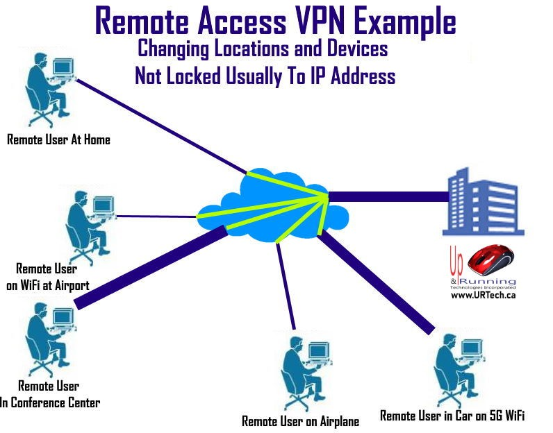
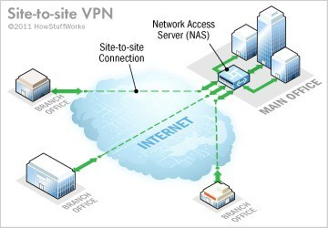
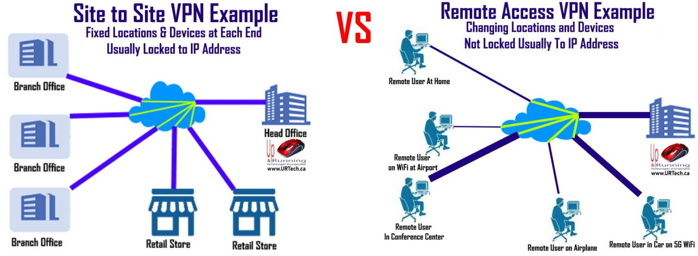

4.1. Remote Access VPN (Client-to-Site VPN)
Remote Access VPN (Client-to-Site VPN) là mô hình mạng riêng ảo cho phép người dùng cá nhân kết nối từ xa vào mạng nội bộ của tổ chức thông qua Internet,
nhưng vẫn đảm bảo tính bảo mật, toàn vẹn và xác thực dữ liệu. Kết nối này được thiết lập thông qua phần mềm VPN Client trên thiết bị người dùng và hệ thống VPN Server đặt tại doanh nghiệp.
-
Hoạt động theo mô hình User-to-LAN, trong đó mỗi người dùng là một điểm truy cập độc lập vào mạng nội bộ.
-
Yêu cầu cơ chế xác thực đa lớp như tài khoản đăng nhập, mã OTP hoặc chứng chỉ số.
-
Dữ liệu được mã hóa bằng các giao thức bảo mật phổ biến như IPsec hoặc SSL/TLS.
-
Cần cài đặt và cấu hình phần mềm VPN Client trên thiết bị đầu cuối.
-
Có khả năng phân quyền truy cập theo vai trò, vị trí công việc hoặc cấp độ bảo mật.
-
Hiệu suất kết nối phụ thuộc vào băng thông và độ ổn định của Internet phía người dùng.
-
Có thể tích hợp với hệ thống quản lý danh tính và truy cập (IAM) của doanh nghiệp.
-
Cho phép nhân viên làm việc từ xa truy cập hệ thống nội bộ một cách an toàn
-
Bảo vệ dữ liệu khi truy cập từ các mạng không tin cậy như WiFi công cộng
-
Hỗ trợ doanh nghiệp triển khai mô hình làm việc linh hoạt
-
Đảm bảo tính liên tục trong hoạt động khi người dùng không có mặt tại văn phòng
-
Kiểm soát và giám sát truy cập từ bên ngoài vào hệ thống nội bộ
- 4.1.3. Ví dụ vận dụng thực tế
-
Một nhân viên kinh doanh đi công tác cần truy cập hệ thống quản lý khách hàng của công ty. Người này sử dụng VPN Client trên laptop để đăng nhập vào hệ thống VPN của công ty.
Sau khi kết nối thành công, toàn bộ dữ liệu trao đổi giữa thiết bị và máy chủ được mã hóa, giúp đảm bảo an toàn thông tin ngay cả khi sử dụng WiFi công cộng.

Hình ảnh minh họa Remote Access VPN
4.2. Site to Site VPN
Site to Site VPN là mô hình mạng riêng ảo được sử dụng để kết nối hai hoặc nhiều mạng nội bộ tại các vị trí địa lý khác nhau thông qua Internet,
tạo thành một hệ thống mạng thống nhất, cho phép các mạng này giao tiếp với nhau một cách an toàn và liền mạch.
-
Hoạt động theo mô hình LAN-to-LAN, kết nối trực tiếp giữa các mạng nội bộ
-
Không yêu cầu cài đặt phần mềm VPN trên từng thiết bị người dùng
-
Được thiết lập và quản lý trên các thiết bị mạng như router hoặc firewall
-
Sử dụng các giao thức bảo mật như IPsec để mã hóa dữ liệu truyền giữa các site
-
Kết nối hoạt động tự động và liên tục sau khi cấu hình
-
Có thể mở rộng để kết nối nhiều chi nhánh trong cùng một hệ thống mạng
-
Độ ổn định cao hơn so với Remote Access VPN do ít phụ thuộc vào người dùng cá nhân
-
Kết nối các chi nhánh, văn phòng của doanh nghiệp thành một hệ thống thống nhất
-
Cho phép chia sẻ tài nguyên nội bộ như máy chủ, cơ sở dữ liệu, ứng dụng
-
Đảm bảo an toàn dữ liệu khi truyền giữa các địa điểm khác nhau
-
Tối ưu chi phí so với việc sử dụng đường truyền riêng (leased line)
-
Hỗ trợ quản lý tập trung hệ thống mạng của doanh nghiệp
- 4.2.3. Ví dụ vận dụng thực tế
-
Một doanh nghiệp bán lẻ có trụ sở chính và nhiều chi nhánh tại các tỉnh. Công ty triển khai Site-to-Site VPN để kết nối toàn bộ hệ thống mạng.
Nhờ đó, dữ liệu bán hàng tại các chi nhánh được đồng bộ về hệ thống trung tâm theo thời gian thực, giúp quản lý và ra quyết định nhanh hơn.

Hình ảnh minh họa Site to Site VPN
4.3. So sánh sự khác nhau giữa mô hình VPN Site to Site và VPN Client to Site
Hai mô hình mạng riêng ảo VPN này khá phổ biến, tuy nhiên chúng lại phục vụ cho các mục đích khác nhau và có nhiều điểm riêng.
| Tiêu chí |
Remote Access VPN
(Client-to-Site) |
Site-to-Site VPN |
| Mục đích sử dụng |
Cho phép cá nhân truy cập từ xa vào mạng nội bộ doanh nghiệp |
Kết nối các mạng nội bộ giữa các văn phòng, chi nhánh |
| Đối tượng sử dụng |
Nhân viên làm việc từ xa, người dùng cá nhân |
Doanh nghiệp, tổ chức có nhiều địa điểm hoạt động |
| Mô hình kết nối |
User-to-LAN |
LAN-to-LAN |
| Cơ chế kết nối |
Người dùng chủ động kết nối khi cần |
Kết nối được thiết lập sẵn và duy trì liên tục |
| Thiết bị sử dụng |
Laptop, điện thoại có cài VPN Client |
Router, firewall tại các điểm mạng |
| Bảo mật dữ liệu |
Mã hóa giữa thiết bị cá nhân và hệ thống mạng nội bộ |
Mã hóa giữa các mạng nội bộ với nhau |
| Khả năng di động |
Cao, có thể truy cập từ nhiều vị trí khác nhau |
Thấp hơn, chủ yếu cố định theo vị trí mạng |
| Khả năng mở rộng |
Phụ thuộc số lượng người dùng |
Dễ mở rộng thêm chi nhánh |
⇒ Remote Access VPN phù hợp với môi trường làm việc linh hoạt, nơi người dùng cần truy cập hệ thống từ nhiều địa điểm khác nhau.
Ngược lại, Site-to-Site VPN phù hợp với doanh nghiệp có cấu trúc nhiều chi nhánh, cần kết nối các hệ thống mạng thành một thể thống nhất.

Hình ảnh so sánh mô hình VPN Site to Site và VPN Client to Site
|